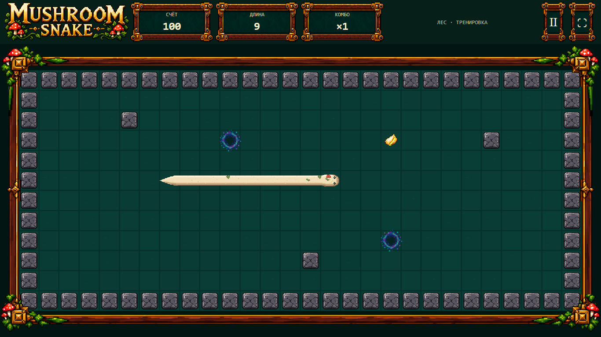

Native CSS pixels by default. Capture scrolls; no hidden shrink-to-fit. Effects / portal stress use explicit QA arrangements, then real canonical movement. 1200 is a clipped long-body fixture, not the bounded Training arena.
